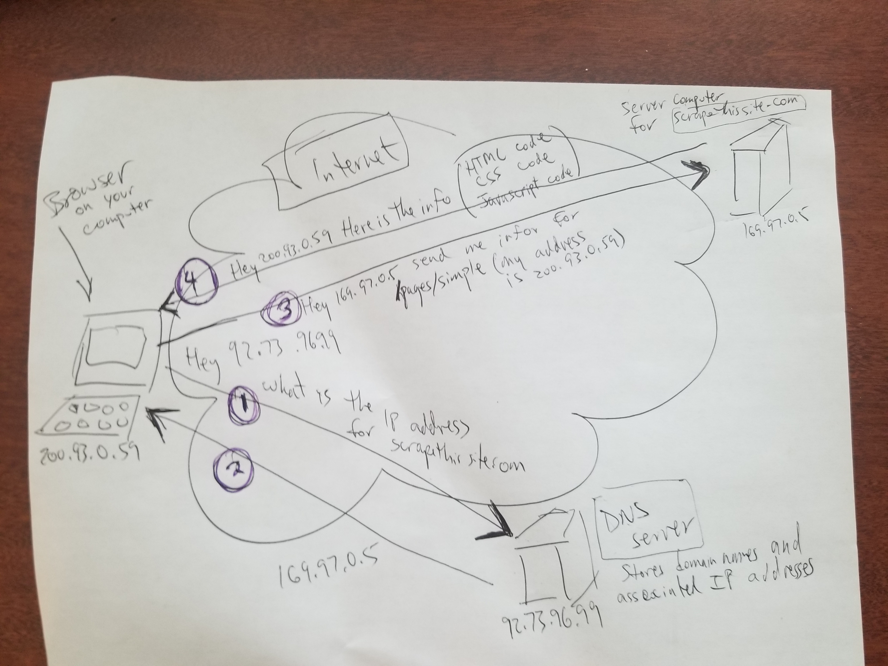

41 40. How a webpage gets to your browser
41.1 Files for this presentation
Click here to download a zip file that contains several files we will use in this presentation:
41.2 browsers communicate with “web servers”
Every website is managed by a computer. When you point your browser at a URL you are really initiating a conversation between your browser and and a program on the computer that is hosting the website. The program that manages the website is known as a web-server program. The computer that the website is hosted on is known as a web-server computer. Your browser is known as a “client program”.
41.3 The parts of a URL
A URL such as https://www.mygreatsite.com/trips/europe/eifelTower.html is comprised of several parts. The URL above is comprised of the following parts: (see this link for a more detailed discussion of the different part of a URL: https://developer.mozilla.org/en-US/docs/Learn/Common_questions/Web_mechanics/What_is_a_URL )
https
This is known as the “scheme” (or the “protocol”). This is the “language” that is used by the browser to communicate with the web server program. For webpages, you will commonly see either “http” or “https”, however other schemes are possible, such as “ftp”, “mailto” as well as others. (Note that “https” and “http” are very different from “HTML”).
://
Used to separate between the scheme (or protocol) and the rest of the URL (In more complicated URLs you may see a number between : and // but that is beyond the scope of our discussion here.)
www.mygreatwebsite.com
This is called the “domain name”. It is the “name” of the computer that is hosting the website.
/trips/europe/eifelTower.html
When the browser requests a URL, the web-server program sends a file back to the browser. Classically, these files are stored on the hard drive of the server computer. This part of the URL represents the path to the file on the server computer. (NOTE: For modern websites the response from the web-server to the browser is often generated “dynamically” in “real time” instead of being stored on the server computer in files. However, these responses can and often are stored in files. In any case, this part of the URL can be thought of as a path that helps the server computer understand exactly which information needs to be sent back to the browser.)
41.4 Diagram
We’ll disucss the following diagram in class.

The diagram shows how computers on the Internet communicate with each other. Every computer has a unique number - called an IP address. In order for one computer to engage in a conversation with another computer, the first computer must know the IP address of the 2nd computer. (In this way an IP address is similar to a telephone number.) The diagram shows how your computer that is running the browser finds out the IP address (similar to a telephone number) of the computer that manages the website.
41.5 IP addresses and DNS servers
Each domain name, which represents a computer on the Internet, (e.g. www.mygreatwebsite.com) has a corresponding IP address. You can think of the domain name and IP address for a computer on the Internet as being analogous to a person’s name and the person’s phone number. In order for one computer on the Internet to contact another computer, the first computer must know the IP address of the computer it wants to contact.
The first time your browser tries to access a new website, the browser generally does NOT know the IP address for the computer running the website. Your browser must “look up” the IP address. If you don’t know a person’s phone number but you know their name you can “look up” their phone number. In the mid 1900s it was common for someone to “call an operator” to get someone’s phone number. This is similar to what happens with a browser when contacting a website for the first time. The browser needs to find out the IP address for the website. To find the IP address, the browser contacts another computer, known as a Domain Name Server (AKA, DNS server). The browser asks the DNS server to provide the IP address for the website’s domain name (e.g. www.mygreatwebsite.com). This IP address (e.g. 89.123.92.5) is then sent back to the browser. This communication between the browser and the DNS server is labeled in the diagram as steps (1) and (2). This all happens “behind the scenes” and you as a typical computer user is totally unaware that all of this is happening.
The browser then uses the IP address to contact the web-server for the website. This is shown in the diagram as steps (3) and (4).
41.6 How does a computer know the IP address of the DNS server?
We said that in order to communicate, a computer must know the IP address of the computer that it is trying to contact. If so, how does your computer know the IP address of the DNS server computer? The answer is simple. Your computer is configured with that information. This all happens when your computer is setup with Internet service.
Every Internet Service Provider has DNS servers that their users computers are configured to contact. Your computer has been configured to contact the DNS server for your Internet Service Provider. The following shows how to see your DNS server settings on Windows and Mac. Note that these instructions can become outdated with newer releases of Windows or Mac OS. If by the time you read this, these instructions are out of date, search online for something like “how do I see what DNS server I’m using on Mac” (or Windows 10, etc) https://www.lifewire.com/check-dns-settings-5215603
41.7 Large websites are run by many different computers
Large websites such as google.com and amazon.com have many different computers that respond to web requests.
We said that a domain name such as www.mygreatwebsite.com corresponds to a specific computer that is running a website. That’s not exactly true. Actually a specific IP address corresponds to a specific computer. When asked for the IP address of a domain name, the DNS server might respond with different IP addresses to different requests for the same domain name. In this way google, amazon and other large websites can spread the work (i.e. the load) of supporting the web requests over many different server computers. The details of how all of this is done is way beyond the scope of our discussion.
The main ideas you should walk away from this discussion with are:
- a domain name represents a computer (or multiple computers) on the Internet
- an IP address represents a specific computer on the Internet
- Given a domain name, a DNS server, responds with an IP address for that domain name.
41.8 The server sends HTML, CSS and Javascript code back to your browser
When the server receives the request for the webpage it sends back one or more files that contain the “code” for the webpage. It is this code that the browser uses to know how to display the contents of the webpage. The code for a webpage is comprised of the following three languages.
HTML: this language is used to describe the text and overall structure (e.g. headings, paragraphs, lists, tables, etc) of a webpage.
Cascading Style Sheets (CSS): this language is used to describe the styling (e.g. colors, fonts, etc) of the webpage
JavaScript: this language is used to add “dynamic” features to the webpage, (e.g. menus that pop-up when users click on them).
It is possible for all three languages to be combined into a single file or for the different languages to be located in different files that the server sends to the browser. The rest of this document describes these three different languages.
41.9 How to see the “code” for a webpage
41.9.1 view page source
If you right-click on any webpage you should see an option to “view page source” (or something similar, depending on which browser you are using). If you click on this option you will see the “source code” for the webpage.
41.9.2 inspect
Similarly, if you right click on the webpage and choose “inspect” you will also see the source code for the webpage along with many tools for analyzing the underlying technologies that the browser uses to present the webpage. The details of how to use all of these tools are beyond the scope of this material. However, we will use some of these tools when we learn about how to do “web scraping”.
41.10 HTML example
We will be working with the following files from the htmlExamples.zip file (see the link at the top of this page). Download the zip file and extract the following files and place them in the same folder.
- stuffToDo.html
- yellowUmbrella.png
Double click on this file stuffToDo.html to open it in a browser.
Also open stuffToDo.html in a text editor (e.g. RStudio - File | Open File)
See this link for an overview of HTML. https://developer.mozilla.org/en-US/docs/Learn/Getting_started_with_the_web/HTML_basics
41.10.2 HTML concepts you must know
HTML element - e.g.
<h1>My Stuff</h1>- this is broken down into the following:- start tag - e.g.
<h1> - end tag - e.g.
</h1> - contents - e.g. My Stuff
- start tag - e.g.
HTML empty tags - e.g.
<hr />or<hr "width=50%" />or<img src="smiley.jpg" />- these types of tags do NOT have an end tag. They can end with a space followed by a forward slash to indicate that there is no end tag. Modern HTML allows for leaving off the space/ (e.g.
<hr>instead of<hr />, but even in modern HTML the space/ is often still included.
- these types of tags do NOT have an end tag. They can end with a space followed by a forward slash to indicate that there is no end tag. Modern HTML allows for leaving off the space/ (e.g.
HTML attributes
Are placed inside of start tags or empty tags. An attribute contains a name and a value. The attributes affect how the HTML elements work.
Example: in
<a href="https://google.com">my favorite browser</a>the start tag is
<a href="https://google.com/">href="https://google.com/"is an attribute.hrefis the NAME of the attribute"https://google.com/"is the VALUE of the attribute
the end tag is
</a>
41.11 CSS example
HTML is used to layout the basic structure of a webpage.
CSS is used to apply styles (e.g. colors, fonts, etc.) to a webpage.
See this link for an overview of using CSS selectors: https://developer.mozilla.org/en-US/docs/Learn/CSS/First_steps/Getting_started
The CSS for a webpage can be placed in the same file as the HTML code or in a different file. In the overview on the developer.mozilla.org website linked above the CSS is placed in separate file from the HTML code. This is done with the use of the<link> tag as shown in the snippet below. The <link> tag, which identifies the name of the file that contains the CSS code, is placed inside the HTML
element.
<html>
<head>
<link rel="stylesheet" href="nameOfCssFile.css" />
</head>
<body>
Rest of your webpage goes here
</body>
</html><style> element that is placed inside the
element. For example:
<html>
<head>
<style>
/* CSS Styling rules go here */
</style>
</head>
<body>
Rest of your webpage goes here
</body>
</html>We will be working with the following files from the htmlExamples.zip file (see the link at the top of this page). This example uses the 2nd approach listed above (i.e. putting the CSS directly in the HTML file with the <style> element). Download the zip file and extract the following files and place them in the same folder.
- stuffToDo-withCss-v002.html
- yellowUmbrella.png
Double click on this file stuffToDo-withCss-v002.html to open it in a browser.
Also open stuffToDo-withCss-v002.html in a text editor (e.g. RStudio - File | Open File)
41.11.1 Practice with CSS selectors
Use the following website to learn about different CSS selectors and to practice using them:
https://flukeout.github.io/Suggested answers are here:
https://gist.github.com/chrisman/fcb0a88459cd98239dbe6d2d200b02d1Another website for testing your knowledge of CSS selectors:
https://css-speedrun.netlify.app/Suggested answers are here:
https://github.com/Vincenius/css-speedrunThe following website is very useful for learning more about CSS as well as many other topics in technology: https://www.w3schools.com/w3css/defaulT.asp
41.12 Javascript example
We will be working with the following files from the htmlExamples.zip file (see the link at the top of this page). Download the zip file and extract the following file from the zip file before continuing.
- javascriptExample-v002.html
Double click on javascriptExample-v002.html to open it in a browser.
Also open javascriptExample-v002.html in a text editor (e.g. RStudio - File | Open File)